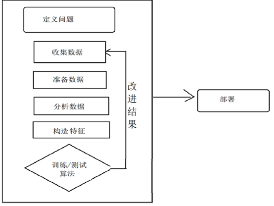
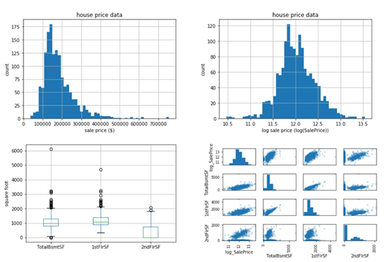
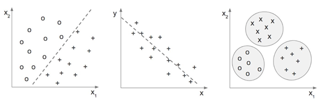

现在我们已经看了解到了一些ML应用程序的例子，问题是，我们如何构建这样的ML应用程序和系统?
下图总结了我们使用ML开发应用程序的方法，我们将在下面更详细地讨论这个问题:

如上图所示，建立学习模型的步骤如下:
问题定义:任何项目的第一步不仅是理解我们想要解决的问题,也定义了我们如何使用ML来解决问题。这第一步无疑是构建有用的ML模型和应用程序中最重要的一步。在开始构建ML模型之前，我们至少应该回答以下四个问题:
l 当前碰到了什么问题?这是我们描述和陈述我们试图解决的问题的地方。例如，一个问题描述可能是需要一个系统来评估小企业主偿还小企业贷款项目贷款的能力。
l 为什么这是个问题?重要的是要定义为什么这样的问题实际上是一个问题，以及为什么新的ML模型将是有用的。也许我们已经有了一个可用的模型，但发现它的表现比以前差了;我们可能已经获得了新的数据源，可以用来构建新的预测模型;或者我们希望现有的模型能够更快地产生预测结果。认为这是一个问题，并且需要一个新模型的原因可能有多种。定义它为什么是一个问题，将帮助我们在构建新的ML模型时，保持在正确的轨道上。
l 解决这个问题的方法有哪些?这是我们集思广益解决给定问题的方法的地方。我们应该考虑这个模型是如何使用的(需要这是一个实时系统还是会作为批处理运行?),它是什么类型的问题(这是一个分类问题,回归,聚类,还是其他东西?),和我们需要什么类型的数据模型。这将为构建我们的机器学习模型的接下来的步骤提供良好的基础。
l 成功的标准是什么?这是我们定义检查点的地方。我们应该考虑我们将查看什么指标，以及我们的目标模型性能应该是什么样的。如果我们正在构建一个将在实时系统中使用的模型，那么我们还可以在运行时将目标执行速度和数据可用性设置为成功标准的一部分。设定这些成功的标准将帮助我们继续前进，而不会在某个特定的步骤上停滞不前。
收集数据:拥有数据是构建ML模型最基本和最关键的部分，最好是拥有大量数据。没有数据，就没有模型。根据我们的项目，收集数据的方法可能有所不同。我们可以从其他供应商购买现有的数据源，可以抓取网站并提取数据，可以使用公共数据，也可以收集自己的数据。收集ML模型所需的数据有多种方法，但是在数据收集过程中需要记住这两个数据元素—目标变量和特征变量。目标变量是预测的答案，而特征变量是模型用来学习如何预测目标变量的因素。通常，目标变量不会以标记的形式出现。例如，当我处理微博数据以预测每条微博的情绪时，我们可能没有为每条微博标记情绪数据。在这种情况下，我们必须采取额外的步骤来标记目标变量。收集了数据之后，就可以进入准备数据步骤。
数据准备:收集完所有输入数据后，需要准备一个可用的格式。这一步比想象的更重要。如果我们拥有杂乱的数据，而没有为我们的学习算法去清理它，那么我们的算法将不会从我们收集到的的数据集中很好地学习，也不会像预期的那样执行。此外，即使我们拥有高质量的数据，如果我们的数据不是我们的算法可以训练的格式，那么拥有高质量的数据是没有任何意义的。至少我们应该处理以下列出的一些常见问题，以便我们的数据为下一步做好准备:
n 文件格式:如果我们从多个数据源获取数据，那么很可能会遇到每个数据源的不同格式问题。有些数据可能是CSV格式，而其他数据是JSON或XML格式。有些数据甚至可能存储在关系数据库中。为了训练我们的ML模型，我们首先需要将所有这些不同格式的数据源合并到一个标准格式中。
n 数据格式:不同数据源之间的数据格式也可能不同。例如，一些数据可能将地址字段分解为街道地址、市区、省份和邮政编码，而另一些数据可能没有。有些数据的日期字段可能是美国日期格式(mm/dd/yyyy)，而有些数据可能是英国日期格式(dd/mm/yyyy)。在解析这些值时，数据源之间的这些数据格式差异可能会导致问题。为了训练我们的ML模型，我们需要为每个字段提供统一的数据格式。
n 重复记录:我们经常会看到相同的记录在数据集中重复出现。此问题可能发生在数据收集过程中，在此过程中，我们不止一次地记录了一个数据点，或者在数据准备过程中合并不同的数据集。拥有重复的记录可能会对我们的模型产生负面影响，在进行下一步之前，最好检查数据集中的是否存在重复记录。
n 缺失值:在数据中看到一些记录为空或缺失值也是很常见的。当我们在训练我们的ML模型时，这也会产生不利的影响。有很多种方法可以处理数据中缺失的值，但是我们必须非常小心并很好地理解我们的数据，因为这可能会极大地改变我们的模型性能。处理缺失值的一些方法包括用缺失值删除记录、用平均值或中位数替换缺失值、用常量替换缺失值等等方法。在处理缺失值之前，研究我们的数据将会是意见非常有用的事情。
数据分析:现在我们的数据已经准备好了，是时候实际查看数据了，看看我们是否能够识别任何模式并从数据中获得一些见解。摘要统计和图表是描述和理解数据的两种最佳方法。对于连续变量，从最小值、最大值、平均值、中值和四分位数开始比较好。对于分类变量，我们可以查看类别的计数和百分比。在查看这些汇总统计信息时，还可以开始绘制图形来可视化数据结构。下图显示了一些常用的数据分析图表。直方图常用来显示和检查变量、离散值和偏差的基本分布。箱形图经常用于可视化五位数摘要、离散值和偏差。散点图经常被用来检测变量之间明显的两两相关关系:

数据分析和可视化。左上:房屋销售价格直方图，右上:房屋销售价格直方图，左下:地下室、一层、二层建筑面积分布的箱形图，右下:一层与二层建筑面积的散点图。
构造特征:构造特征是应用ML中模型构建过程中最重要的部分，然而，这是许多教科书和ML课程中讨论最少的话题之一。构造特征是将原始输入数据转换为更有意义的数据，以供算法学习的过程。例如，对于我们将要构建的微博情绪预测模型，我们的原始输入数据可能仅在一列中包含文本列表，而在另一列中包含情绪目标列表。我们的ML模型可能不会学习如何用这些原始数据，来进行很好地预测每条博文的情绪。但是，如果我们转换这些数据，列出每条博文中每个单词出现的次数，那么我们的学习算法可以更容易地了解某些单词的存在与情绪之间的关系。我们还可以将每个单词与其相邻的单词(bigram)进行分组，并将每条博文中每个相邻的单词(bigram)的出现次数作为另一组特征。从这个例子中可以看出，构造特征是一种使原始数据更具有代表性和更能反映潜在问题的方法。构造特征是一门科学，也是一门艺术。构造特征需要良好的数据集领域知识，从原始输入数据构建新特征的创造力，以及多次迭代以获得更好的结果。在后面的文章中，我们将会学习一些具体的构造特征的方法。
训练/测试算法:一旦我们创建了自己的特性，就该训练和测试一些ML算法了。在开始训练模型之前，最好考虑一下性能指标。根据我们正在解决的问题，对性能度量的选择将会有所不同。例如，如果我们正在构建一个价格预测模型，我们可能希望最小化我们的预测与实际价格之间的差异，并选择均方根误差(RMSE)作为性能度量。如果我们正在构建一个信用模型来预测一个人是否能够获得贷款批准，那么我们可能希望使用精确度作为性能度量，因为错误的贷款批准(假阳性)比错误的贷款不批准(假阴性)具有更大的负面影响。
一旦我们的模型有了具体的性能度量，我们就可以训练和测试各种学习算法及其性能。根据我们的预测目标，我们对学习算法的选择也会有所不同。下图展示了一些常见的机器学习问题。如果我们正在解决分类问题，那么我们可能希望训练分类器，例如逻辑回归模型、朴素贝叶斯分类器或随机森林分类器。另一方面，如果我们有一个连续的目标变量，那么我们就需要训练回归量，比如线性回归模型，k近邻，或者支持向量机(SVM)。如果我们想通过无监督学习从数据中获得一些见解，你可以使用k-means聚类或mean shift算法:

左:分类，中:回归，右:聚类
最后，我们必须考虑如何测试和评估我们尝试的学习算法的性能。将数据集分成训练集和测试集，并运行交叉验证是测试和比较ML模型最常用的两种方法。分裂成两个子集的数据集的目的,一个用于训练，一个用于测试。K-fold交叉验证是评估模型性能的另一种方法。它首先将数据集分割成大小相等的K个子集，并将其中一个子集留作测试，其余的进行训练。例如，在3倍交叉验证中，数据集将首先分成三个大小相等的子集。在第一次迭代中，我们将使用包#1和#2来训练我们的模型，并在包#3上进行测试。在第二个迭代中，我们将使用包#1和#3在包#2上训练和测试我们的模型，在第三个迭代中，我们将使用包#2和#3在包#1上训练和测试我们的模型。然后，我们将性能度量进行平均，以估计模型的性能:
改进结果:到目前为止，我们已经有了一个或两个表现相当不错的候选模型，但是可能仍然存在一些改进的空间。也许我们的候选模型在某种程度上过度拟合了,他们可能不符合我们的目标,有多种方法可以帮助提高我们的模型和他们的性能如下:
l 超参数调优:我们可以调优模型的配置，以潜在地提高性能结果。例如，对于随机森林模型，我们可以调整树的最大高度或森林中的树的数量。对于向量机，我们可以调整内核或成本值。
l 集成:集成是将多个模型的结果结合起来以获得更好的效果。集成是同样的算法在不同数据集的子集进行训练,提高结合不同模型相同的训练集,进行训练和叠加,模型的输出作为输入的元模型,学习如何结合子模型的结果。
部署:一旦准备好了我们的模型，就到了让它们在生产环境中运行的时候了。确保在我们的模型完全部署之前，已经进行了大量的测试。为我们的模型开发监控工具也是一个很好的方法，因为随着输入数据的发展，模型性能会随着时间的推移而下降。
在本章中，我们学习了开发ML模型的步骤以及每个步骤中的常见挑战和任务。在接下来的章节中，我们将遵循这些步骤来完成我们的项目，我们将更详细地探索某些步骤，特别是在构造特征、模型选择和模型性能评估方面。我们将根据要解决的问题类型，讨论在每个步骤中可以应用的各种技术。
在下一章中，我们将直接应用ML的基本原理来构建垃圾邮件过滤的ML模型。我们将按照本章讨论的构建ML模型的步骤，将原始电子邮件数据转换为结构化数据集，分析电子邮件文本数据以获得一些见解，最后构建预测电子邮件是否是垃圾邮件的分类模型。在下一章中，我们还将讨论一些常用的分类模型评估指标。